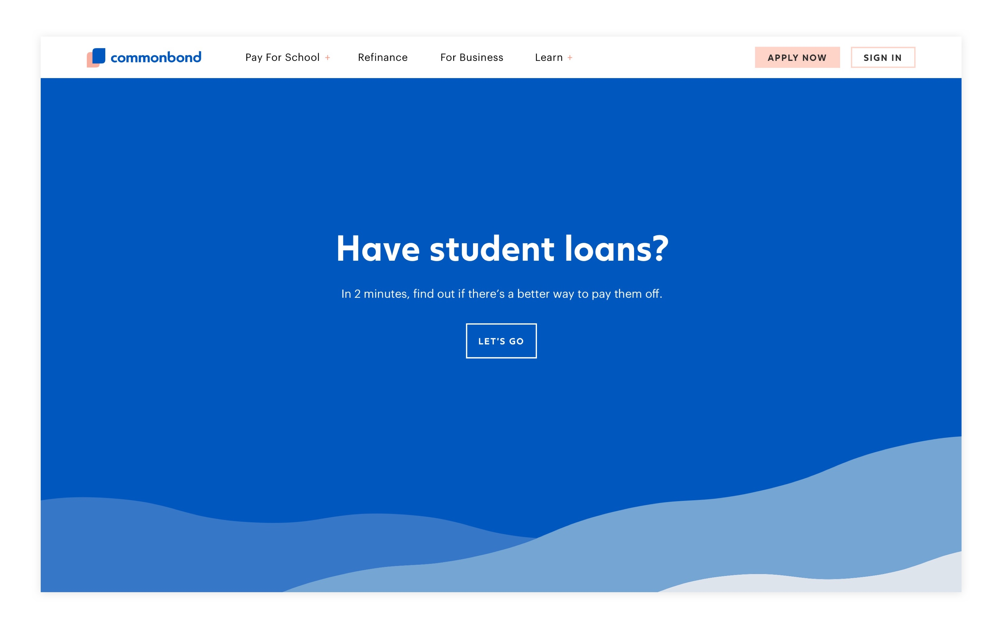
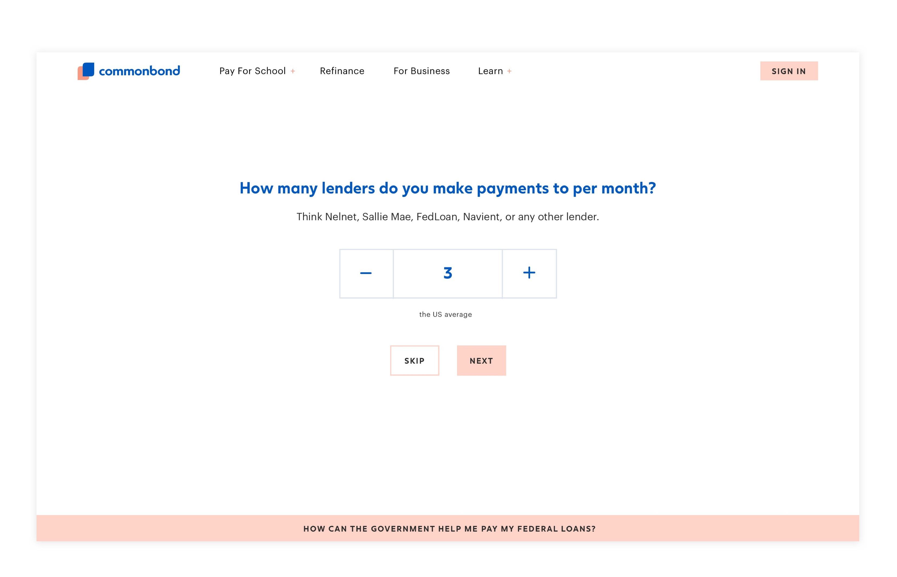
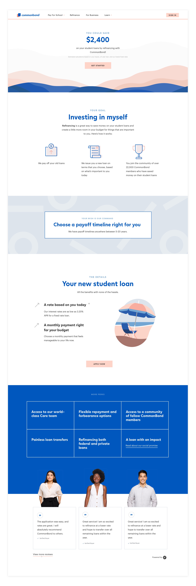
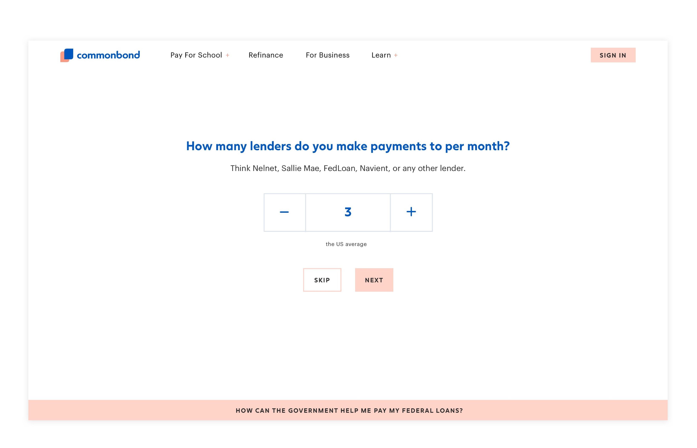
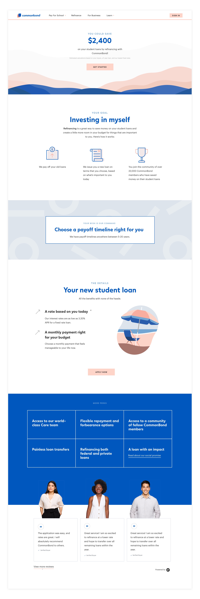

Leading design and growth experimentation on the Refinance team
My role: Product designer and strategist
CommonBond's mission is to relieve the student debt burden in the United States. The company has funded more than $2 billion in student loans that are aimed to help borrowers take control of their debt and reach better financial outcomes.
As the sole product designer on our Refinance business line, I lead the entire design process on our team - including problem definition, discovery, prototyping, and UI and interaction design.
The following are a couple of my biggest contributions to our team.
Using conversational design to meet user needs and increase loan volume
Our refinance product team faced a conundrum throughout 2018. Millions of student loan borrowers in the United States can benefit from refinancing their loans, either for a better rate or a lower monthly payment. However, we often observed visitors leave our site without taking the first steps that would help us determine if we might be able to improve their student loan situation. What was the cause of these low conversion rates?
üëâüèº In other words: what human needs were we failing to meet, leading humans to drop off at certain points of our application process?
Understanding the user journey
I began by creating a service blueprint that mapped the entire journey of a prospective borrower applying to refinance their student loans. This involved speaking with stakeholders across the company, from product, marketing, operations, underwriting, and tech.
The exercise revealed three major areas of improvement:
- Keeping our users informed and confident
- Accommodating a wide range of commitment levels and user priorities
- Coordinating user touchpoints
I also conducted one-on-one conversations with student loan borrowers over the course of several months. I learned that our conversion numbers meant that a large population of student loan borrowers didn’t relate to the experience we had optimized for in our application process. Not everyone is a spreadsheet maximizer whose only concern is a low interest rate!
Designing the conversation
In an effort to improve top-of-funnel conversion rates as well as address user needs revealed in the service blueprint, I led our team in a conversational design workshop. The exercise would help us determine how we should introduce CommonBond to a potential borrower and onboard them onto our application.
Paper prototyping
Our team agreed that we would be able to best serve potential borrowers if we had a better understanding of 1) their financial goals and 2) their existing student loans. I designed a ‘paper prototyping’ exercise that would help us more tangibly imagine the experience and user journey.
Low fidelity prototyping
I used Usertesting.com as well as physical paper prototypes to test our ideas. Would people be willing to tell us about their student loans? Would they find it bothersome? Will a conversational approach work?
We found that people were willing to share student loan information as long as the value proposition was clear, and that our conversation would have to strike the right balance between professional and casual.
I designed and tested about 7 variations; see our prototype graveyard below!
High fidelity designs
I used our existing brand guidelines to design a desktop and mobile friendly experience. I used Principle to prototype interactions, designing the experience so that it would feel as easy and enjoyable as a Buzzfeed quiz.
 



Impact
Our hypothesis was that users who see this more approachable, conversational experience will convert at higher rates than those who see the more transactional version of our application. It turned out to be true; this experience led to a ✨double digit increase✨ in booked loans within several months. We demonstrated how drastically we could change outcomes when translating a business need (increase conversion) into human needs (meet people where they are).
Building a strong product culture focused on growth experimentation
Before I began at CommonBond, the Refinance product team only ran a handful of product experiments. Today, we have about 6-7 experiments running at any given time in order to enhance our user experience while reaching our volume goals. I've led a cross-functional team - including marketing and operations - in building our experimentation pipeline, process, and culture, as well as designing new variations and experiences to test.
Below is a sampling of our pipeline of hypotheses. All hypotheses are based on user problems we've identified through research and feedback.
Here's the corkboard where we display our live experiments and results for stakeholders to see:
Experimentation is an extremely important part of our business line, as it helps us ensure we're designing the right things, and that our experiences are leading to positive business outcomes. Plus, it's a great way to gather data points about users and constantly make sure we are providing the best experiences possible.